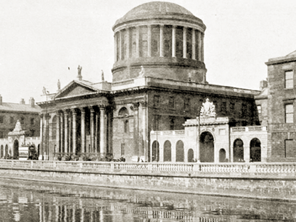

The 1st Battalion of the Dublin Brigade, led by Edward Daly, occupied the Four Courts and the adjacent streets on the north bank of the Liffey. One mile to the west of Sackville Street, this was a strategic area as it controlled the main route between the military barracks and the GPO.
The British had forces at the Royal Barracks (now Collins Barracks), Richmond in Inchicore, and at Phoenix Park. Daly’s garrison was involved in fierce fighting with British cavalry, South Staffordshire and Sherwood Forest regiments in the area, particularly around North King Street where civilians were murdered.
Taking over a local bakery, Daly is said to have arranged the distribution of bread to the local community. Ireland’s main courts complex, the Four Courts survived the Rising, but was destroyed during the Civil War in 1922. It was rebuilt and reopened in 1932.
